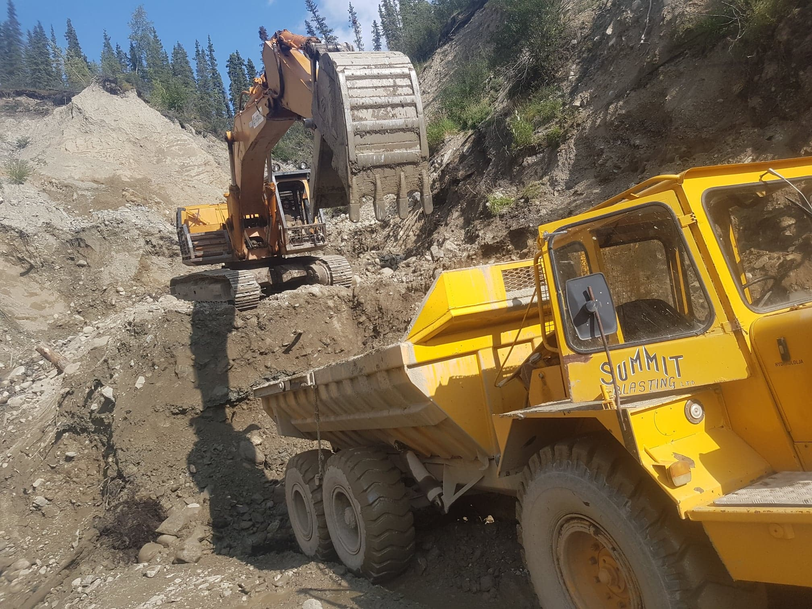
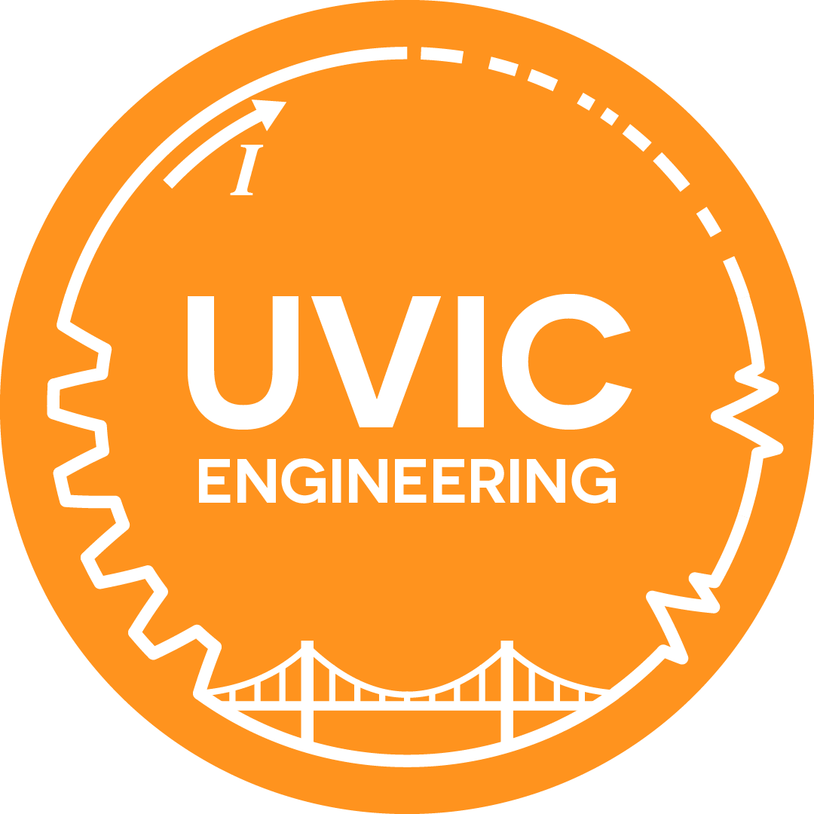

Work Experience
NTBio Diagnostics Inc.; January-September 2019
Junior Software Developer and Marketing Assistant
Responsibilities:
- Created mockups of every activity for a new mobile app based on criteria provided. These mockups gave developers a defined direction and showed
- Developed all components of a new app to increase the value of products that were already offered to make the company more competitive
- Communicated technical details of the development process with people who did not have IT backgrounds
- Maintained apps already released to ensure users received the best products
- Localized apps to bring revenue from new markets
- Created tests to find critical bugs in numerous projects and fix the bugs when they were discovered to create more stable products for users
- Maintained and updated various company websites to ensure that our customers received up-to-date information about products and events

Little Violet Gold Mine; 2018
Rock Truck Operator
Responsibilities:
- Clearing trails with chainsaws and hand tools
- Operating and maintaining industrial mining trucks and equipment (generators, pumps, water cannons, power tools)
- Setting up pipelines for mining operations
Beaver Valley Feeds; 2014-2018
Warehouse Labour
Responsibilities:
- Design and build the company website using third party software (wix.com)
- Resolved customer issues by recommending products and actions
- Train and teach new employees (restock, forklift operation, filling orders)
Volunteer Experience

Engineering Student Society
Vice-President Communications
Responsibilities:
- Maintain and Update the Engineering Student Society(ESS) website
- Design flyers to advertise for ESS Events and services
- Post to ESS social media pages to inform students up upcoming events
- Participate in weekly council meetings that govern the ESS
VikeLabs Club-Spontaniius Project
Club Developer
VikeLabs is a software Development club based at UVIC. The club is comprised of teams of 3-8, each team working on one project.
I am a part of the Spontaniius Project, developing a new social networking app.
What I have been working on has been an activity for the user to create events for people to meet at. It's full of network requests and
cacheing data locally and UI design, and I'm having a lot of fun with the project so far! Unfortunately, COVID-19 has set our development team
back a bit, and at this moment there is no final product for me to show off.